The Kleier Family's Journey to America, 1885
Johann and Albertine Kleier
(John's Grandparents)
In the waning years of the 19th century, when steamships had begun to shrink the Atlantic and opportunity beckoned across the ocean, a Pomeranian laborer named Johann (John) Kleier considered moving his wife Albertine (Raddatz) and children to begin a new life in America. The year was 1885, and the Kleiers' decision would place them among the vast tide of German families who left the provinces of northern Prussia in search of stability and land in the American Midwest.
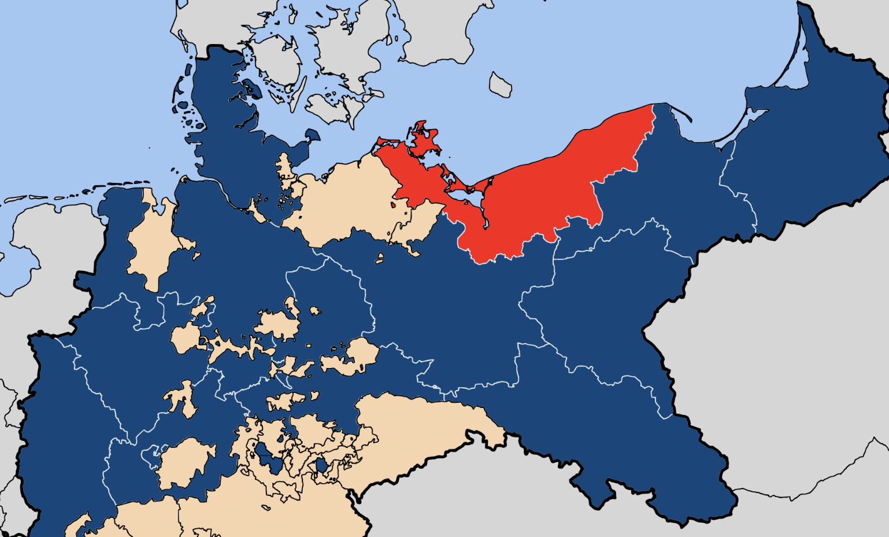
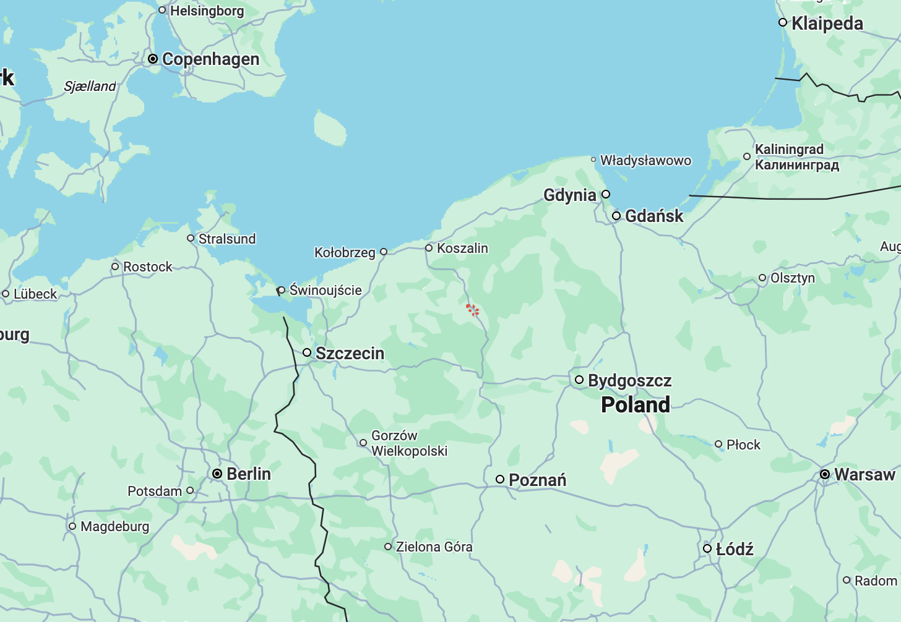
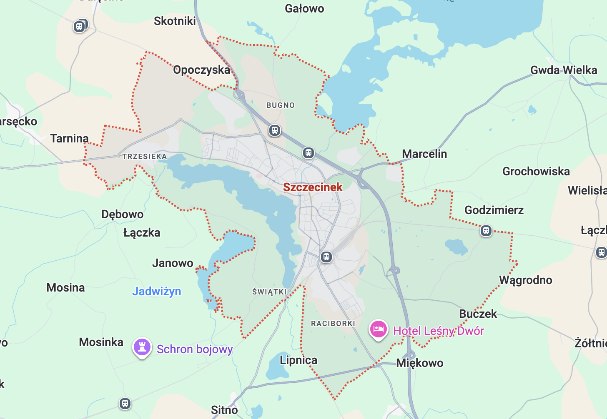
Home area of the family, in today's Poland.
At the time, life in Pomerania was increasingly difficult. The region's small farmers and rural laborers faced declining wages, overworked land, and limited prospects. Germany's rapid industrialization under Chancellor Otto von Bismarck was drawing young men to the cities while leaving agricultural families like the Kleiers struggling to survive. Between 1870 and 1890, nearly two million Germans—especially from the northern provinces of Pomerania and Mecklenburg—chose emigration as their solution. Steam travel made the decision feasible: the voyage from the Baltic to New York now took weeks instead of months.
In 1885, Klein Dallenthin Kleier family lived in a small Lutheran farming village in Kreis Neustettin, Province of Pomerania, within the Kingdom of Prussia, where about 200 residents lived modestly amid rolling fields and pine forests.
Families like the Kleiers worked as smallholders or day laborers, growing rye, potatoes, and oats, and attending services at the Evangelische Kirche Sparsee (Barwice), where baptisms and marriages were also registered at the Standesamt Sparsee civil office. The nearest town, Neustettin (now Szczecinek, Poland), was a growing market and rail hub of around 10,000 residents.
March 24, 1885 — Leaving Germany
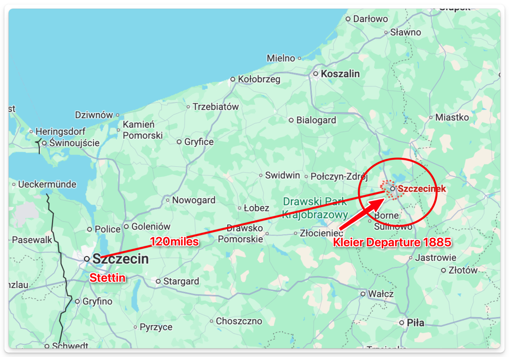
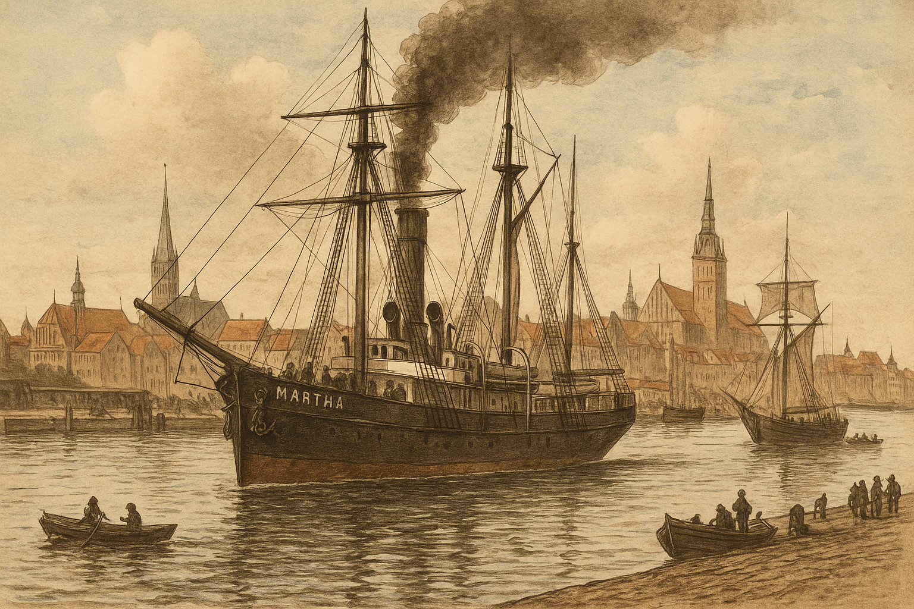
Martha in Stettin">An emigration register preserved today at the Staatsarchiv Greifswald lists Johann and Albertine Kleier, ages thirty-eight and thirty-two, along with four children: Carl, aged ten; Johann Jr., aged five; Julius, aged two; and baby Martha, only a few months old. The record notes their departure aboard the steamship Martha under Captain Hegge, leaving Stettin—a bustling Baltic port city then part of Prussian Pomerania (now Szczecin, Poland)—on 24 March 1885. Their stated destination was Wisconsin, where other Pomeranian families had already begun to settle.
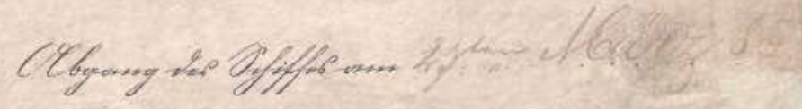
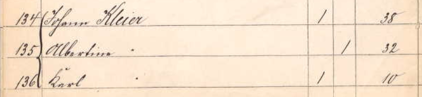
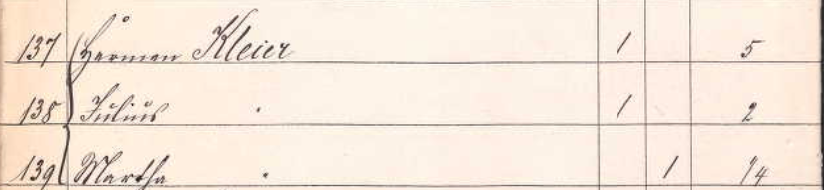
Johann and Albertine, who was 2 months pregnant at the time with Gretchen, boarded the Martha, a small steamship typical of the transitional era between sail and full-steam travel, carrying emigrant families through the Danish Straits and across the North Sea before turning west for New York. The Kleiers would have endured cramped steerage quarters but also the growing efficiency and safety of steam navigation.
Four weeks later, the ship entered New York Harbor on 20 April 1885, and their names appeared again—this time in the arrival manifest at Castle Garden, the immigration station at the southern tip of Manhattan.
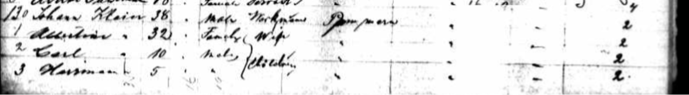
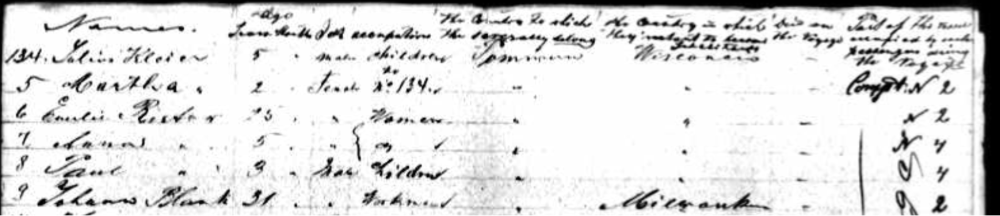
Castle Garden, New York Records
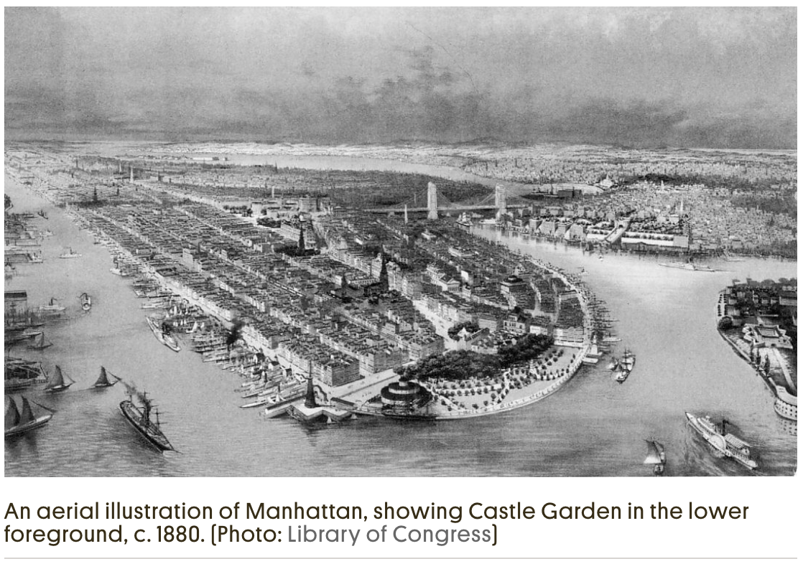
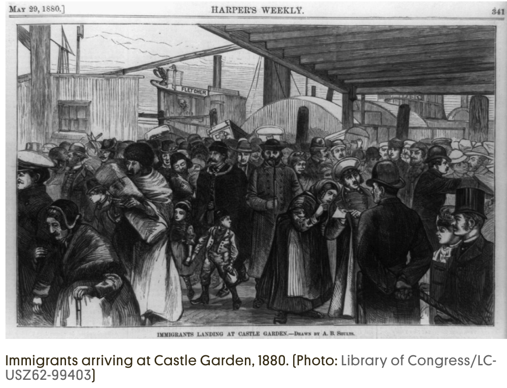
The manifest confirms the family's arrival: Johann Kleier, 38, a "workman" from Pomerania; Albertine Kleier, 32, "family wife"; and children Carl, 10; Johann, 5; and Martha, 2.
From Castle Garden, they traveled inland by rail through Chicago to Milwaukee, joining one of the largest German-speaking communities in the United States. There, and later in nearby Greenfield, they joined other immigrants from Pomerania who had brought their Lutheran faith, work ethic, and dialect to the dairy farms and small factories of Wisconsin. The state's cool climate and rolling farmland reminded many of home.
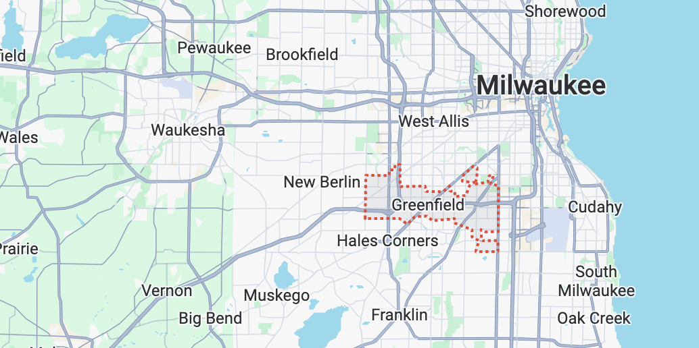
In American records from the 1890s onward, Johann began to appear as John Kleier, and Albertine as Florence—a natural evolution for immigrants integrating into English-speaking life. The 1900 U.S. census lists them with their children: Carl, born in Stettin in 1879; John Jr. (Herman) born 1880, Julius, born Dec 1882; Martha, born March 1884; Gretchen, born in Wisconsin October 1885; and Annie, born January 1891 in Greenfield.
John (Johann) Kleier declared his intention to become a U.S. citizen on 30 October 1888, only three years after arrival, and continued working as a laborer or craftsman in Milwaukee. He died on 11 December 1902, leaving behind a growing American branch of the Kleier family. His son Herman (John Jr), who had crossed the ocean as a child, became a moulder by trade, married a Wisconsin-born woman named Maggie, and raised a family on National Avenue in Milwaukee. Herman's own naturalization was in 1911.
Julius William Kleier
(John's Father)
Julius William Kleier born on December 19, 1882, in Klein Dallenthin, Neustettin, Pomerania. Julius was two years old when he left Germany, so would have little memory of his birth country.
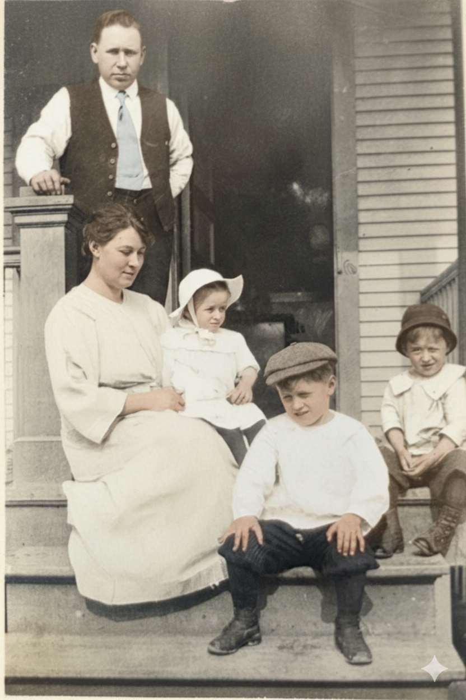
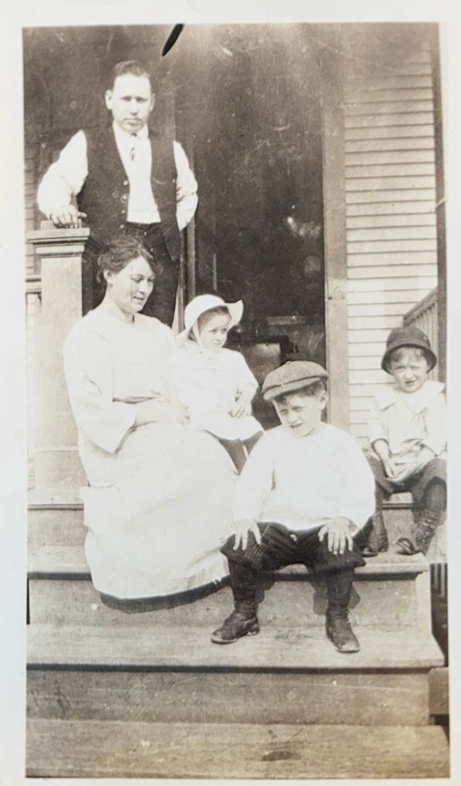
Julius and Elsie Kleier with their young family, about 1916 — photographed on the porch of what should be their West Allis Ward 1, Milwaukee, Wisconsin home. Seated beside Julius is his wife Elsie C. M. Storm (1893–1947), holding their daughter Helen Anna (1914–1999), with sons John Edward (1911–1981) and Clarence Peter (1912–1997) nearby. Just over thirty years after the Kleier family's emigration from Pomerania to America in 1885.
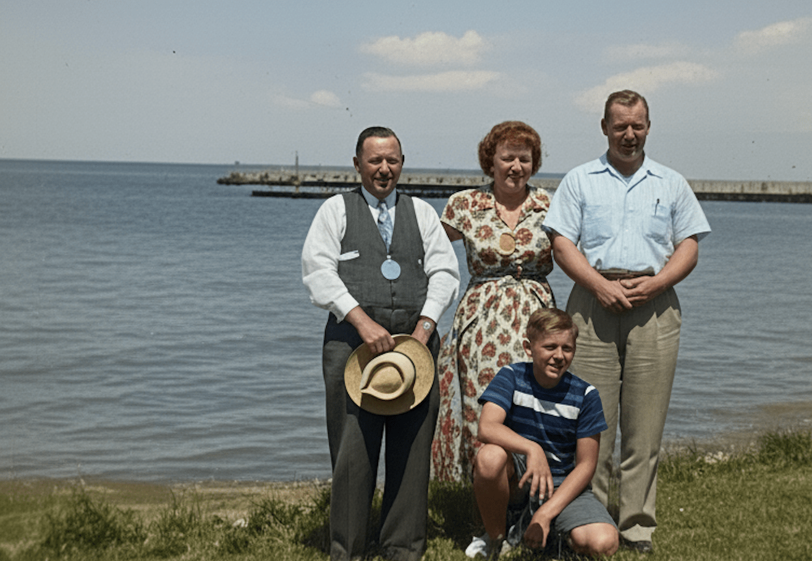
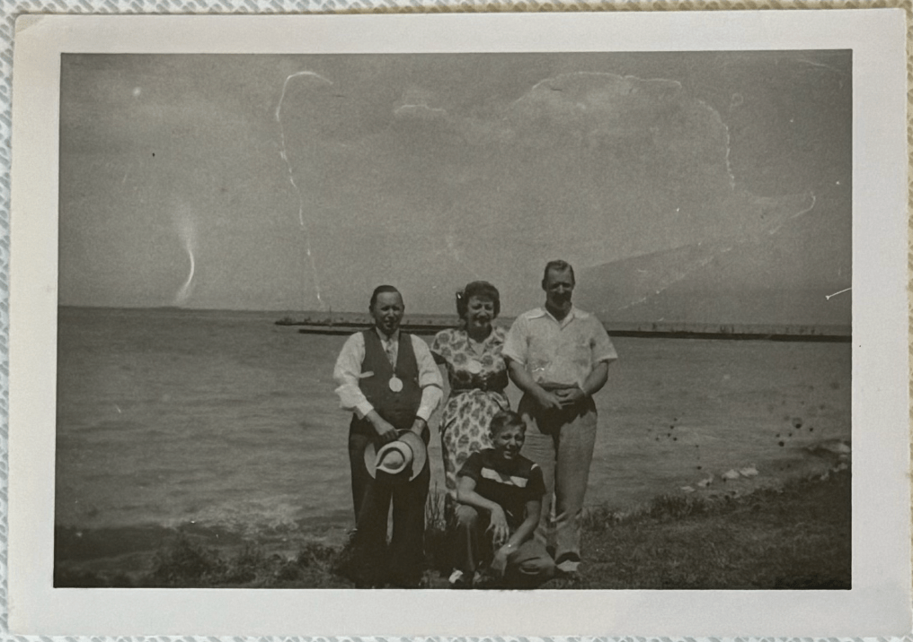
Julius (left), Clarence, June, and David — colorized.
By the turn of the century Julius was living in Greenfield, Wisconsin, working as a laborer, the son of immigrants building a new life through steady work. Around 1910 he spent time in Cleveland, Ohio, before returning to Wisconsin, where on March 11, 1911, he married Elsie C. M. Storm in Milwaukee. Together they raised three children—Edward (1911–1981), Clarence Peter (1912–1997), and Helen Anna (1914–1999)—and lived for decades in West Allis, where Julius worked his way up to assistant superintendent.
The family weathered two world wars and the Great Depression while remaining rooted in the Milwaukee area. After Elsie's death in 1947, Julius continued to live in West Allis until his own passing on October 21, 1960, in Racine, Wisconsin. He was buried in Greenfield, closing the life of a man who bridged two continents and whose journey from Pomerania to the American Midwest traced the larger story of 19th-century immigration and perseverance.
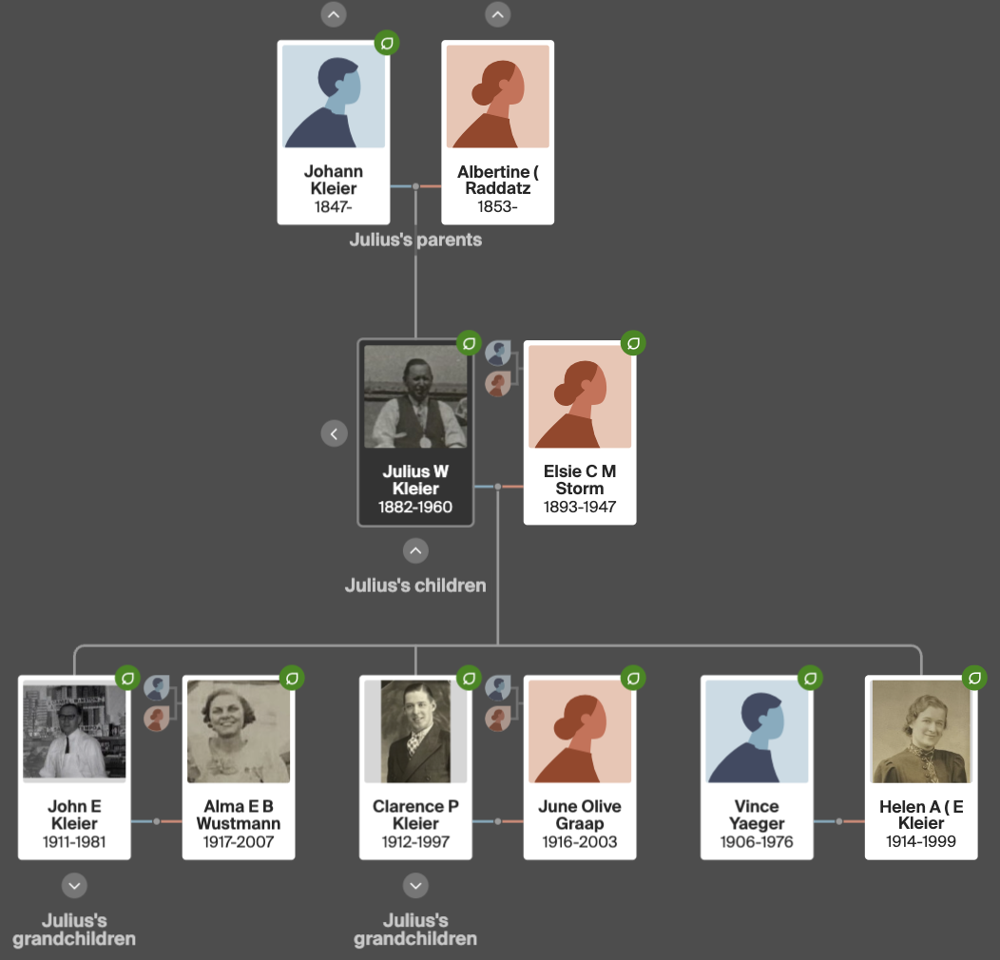
The Kölzow–Kelsey Family
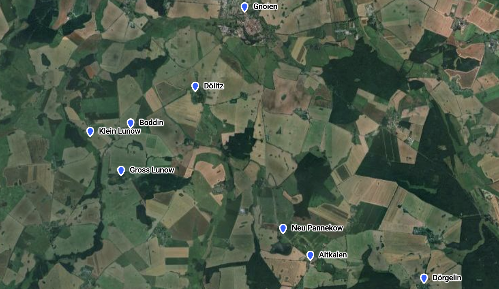
Fields of Mecklenburg: A Land Shaped by Soil, Tradition, and Time
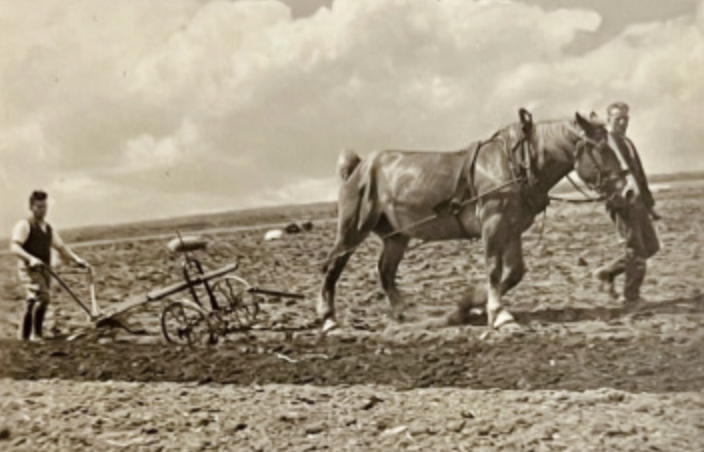
Mecklenburg (Old Saxon for "big castle"), in far northern Germany, was a land formed by the last ice age. The glaciers retreated and left behind a vast patchwork of sandy soils, kettle lakes, peat bogs, and rolling knolls. Villages sat low against the horizon, their church spires the only vertical point for miles. The wind moved constantly across the land, bending fields of rye and sweeping dust along the narrow roads between hamlets.
Here, in the mid-1700s, lived the earliest known Kölzows.
Life Under the Mecklenburg System
Mecklenburg was not Prussia. It was not Bavaria. It stood apart—preserving one of Europe's most rigid and long-lasting systems of manorial governance. For centuries, the region had retained vestiges of feudal hierarchy long after other German states had reformed theirs. In some parts of Mecklenburg, serfdom lasted legally until 1820, and its cultural shadow remained long after.
This meant:
- Land was controlled almost entirely by noble estates (the Rittergüter)
- Tenant farmers owed labor, produce, or rent
- Landless laborers worked for wages that barely sustained a family
- Social mobility was nearly nonexistent
- Education was limited to Lutheran catechism and basic reading
To be born into Mecklenburg's rural class was to inherit not a farm but a station.
I. Friedrich Wilhelm Kölzow (c. 1724–1768)
(Alma's 4th great grandfather)
Very little survives about the earliest known patriarch, Friedrich Wilhelm Kölzow, born around 1724.
A child of mid-18th-century Mecklenburg was born into a world of obligations—to the estate, to the church, and to the seasons. Children tended geese, collected firewood, and watched the fields from early spring until the final harvest. Their first language was Low German, their formal prayers in High German, their calendar one of saints' days and planting cycles.
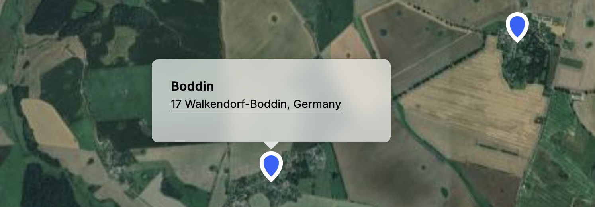
In 1744, Friedrich married Ida Margaretha Remers in Boddin. Their early married life was doubtless lived in a simple thatched-roof house with a clay hearth and floors of compacted earth. They likely shared the structure with animals in winter, a common practice to conserve warmth and protect livestock.
They lost a son, Hans Friedrich, in 1746, a reminder of how fragile life was. Infant mortality in rural Mecklenburg hovered at nearly 30%. A cold snap, a fever, an infection could swiftly end a life.
Friedrich Wilhelm died in 1768, leaving behind a young son who would become the second known patriarch.
II. Johann Friedrich Kölzow (1764–1837)
(Alma's 3rd great grandfather)
Born 22 July 1764, Johann Friedrich came of age in a Mecklenburg still governed by estate obligations. He became a knecht—a farmhand. The term described millions of young men across Germany in the era: unmarried, landless, dependent upon seasonal labor on great estates.
To be a knecht meant:
- Rising before the sun
- Long hours threshing grain, cutting peat, gathering hay, and tending animals
- Sleeping in simple quarters
- Following the commands of an estate overseer
- Earning little beyond food, shelter, and modest wages
Johann married Catharina Riemer, daughter of a cow herder. Together, they lived in Klein Lunow, Boddin, and Neu Nieköhr—a triangle of villages only a few miles apart.
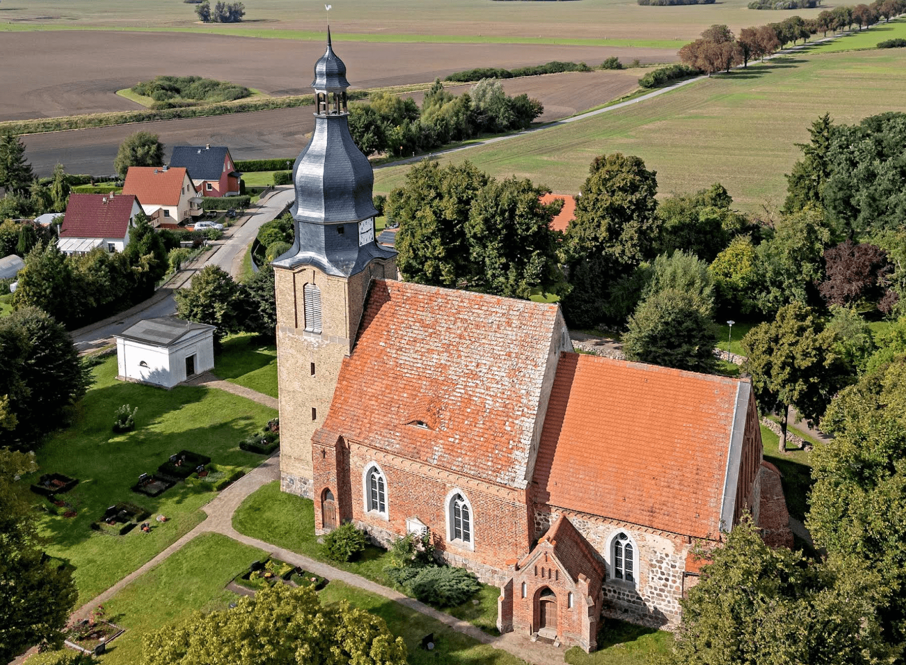
Their children grew up among the rhythms of Mecklenburg agriculture: sowing in April, weeding in June, harvesting in August and September, slaughtering animals before winter. They likely heated their home with peat gathered from nearby bogs, and they attended Lutheran services which punctuated the quiet continuity of the year.
When Johann and Catharina both died in 1837, they left behind a world that was beginning to shift but not yet transformed.
III. Joachim Heinrich Christian Kölzow (1802–1867)
(Alma's 2nd Great-Grandfather)
In 1802, Johann's son Joachim Heinrich Christian Kölzow was born in Boddin U Gnoien.
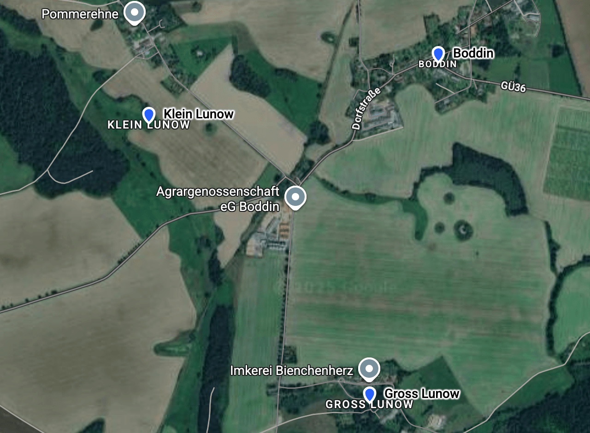
His marriage record from 1825 describes Joachim as a knecht, the same as his father, and the son of an Arbeitsmann, a workingman. These terms show firmly where the family stood in Mecklenburg society: hard-working, respected for their labor, but without property or upward mobility.
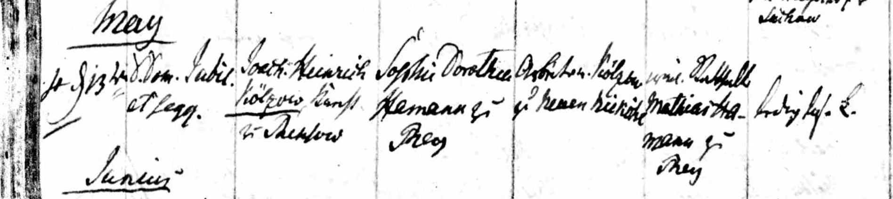
His wife, Sophia Dorothea Hamann, was the daughter of a cow herder—another rural working family.
Joachim and Sophia raised their children in Neu Pannekow, a small agricultural settlement. Here they lived through:
- The crop failures of the mid-1840s
- The revolutions of 1848 that shook German states but barely touched Mecklenburg
- A worsening economy in the 1850s
- Growing poverty and lack of land opportunities
- The rising tide of emigration that swept through northern Germany
In 1827, they had a son, Johann Joachim Friedrich Kölzow (Alma's Great Grandfather) was born on 24 February in the small agricultural community of Neu Pannekow, a cluster of farmsteads within the parish of Boddin in Mecklenburg-Schwerin.
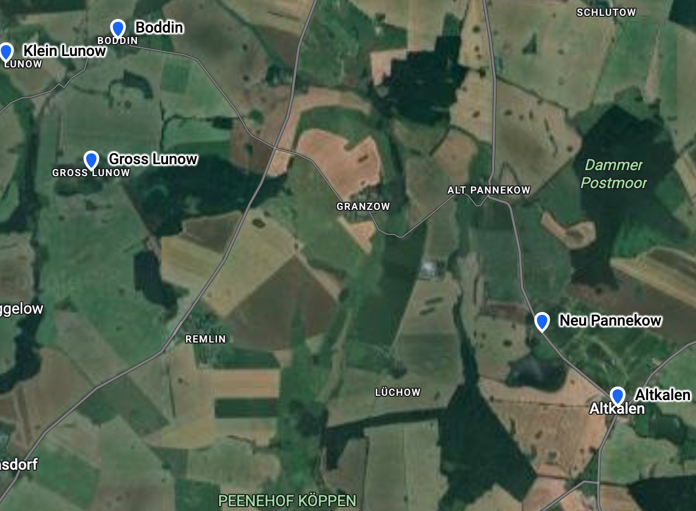
Johann grew up alongside several siblings, though surviving records make it difficult to know precisely how many reached adulthood. Infant mortality was high in the villages around Boddin, and many families lost children in their first year of life. What is clear is that Johann was not an only child; he belonged to a bustling household that worked the fields, tended animals, and lived according to the agricultural calendar. Boys like Johann were expected from a young age to take on labor around the estate—hauling water, gathering firewood, and helping with sowing and harvest seasons. The Boddin parish church books show the Kölzow name regularly, and by the time Johann reached adulthood he would have been known locally as part of a familiar village family.
On Oct 27, 1854 Johann married a woman from his own community: Maria Sophia Joachine Peters, born on April 6, 1831.
Like the Kölzows, the Peters family lived within the Boddin parish boundaries and belonged to the same rural working class. Their marriage was typical of the region at the time—two individuals from neighboring farms, raised in the same traditions, forming a household that would follow the same patterns their parents had known. They began their family in Neu Pannekow, and over the next several years welcomed children. Two sons: Friedrich, born June 27, 1855, and Johann Ernst Martin (Alma's Grandfather), born Aug 21, 1858.
By the late 1850s and early 1860s, the world around Johann began to shift. Mecklenburg had entered a prolonged period of economic strain: wages were stagnant, food prices rose, and work on the estates became increasingly unstable. The years 1860 to 1863 brought poor harvests and genuine hardship. Many families in the Güstrow region began to consider emigration, and word spread quickly of opportunities in America—land, stability, and the promise of a better future for their children. The pressure of looming military service for sons also played a role for many families. For Johann, raising two young boys, the question of whether to remain in Neu Pannekow or seek something better would have become increasingly real.
Departure: The Decision to Cross the Atlantic
Across northern Germany, especially in the rural districts around Güstrow, Rostock, and Pomerania (home of the Kleiers who would leave almost exactly 21 years later), thousands made the same choice. Mecklenburg's population had grown, but its land had not. Estates dominated property. Younger sons could not inherit farms that didn't exist. Wages stagnated. Taxes increased. Opportunities elsewhere beckoned.
And in the letters from Wisconsin—places like Muskego, Cedarburg, New Holstein, and Manitowoc—emigrants wrote of land priced within reach, jobs in lumber and farming, Lutheran churches where German was spoken, communities forming with familiar surnames, children who grew up owning land their fathers could only dream of.
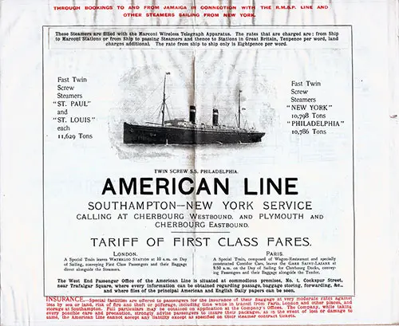
The Crossing of 1864: The Kölzow Family Leaves Mecklenburg
Whether they promised to return or already knew they never would, only the family knew. But the choice was final the moment they stepped onto the road toward Rostock or Gnoien, the nearest places where a traveler could obtain a wagon ride toward the coast.
The journey to Hamburg, nearly 200 kilometers away, likely took several days by a combination of wagon, hired coach, and foot travel. Spring weather had just begun to warm; April 1864 in northern Germany was cool and unsettled, with alternating rain showers and bursts of sun—typical for the Baltic region in early spring.
Arrival in Hamburg — April 1864
Hamburg in the 1860s was one of Europe's great emigration hubs. Crowds of families, agents, merchants, porters, sailors, and children swirled around the piers. The city was buzzing with war news—the Second Schleswig War had begun that winter, and tensions filled the newspapers as Prussian and Austrian forces fought Denmark to the north. Yet emigration continued, unaffected, as thousands saw America as the only path to prosperity and freedom.
On 30 April 1864, the Kölzow family officially appears in the Hamburg Auswanderungsregister, recorded in Volume 373-7 I, VIII A 1 Band 018:
- Residence: Neu Pannekow, Mecklenburg
- Accommodation: Zwischendeck (steerage)
- Relationship: Frau for the mother, family of 4 persons
- Ships noted: Beta → Germania
The Steamship Beta — Transport to Southampton
The Beta was a smaller steamship used to shuttle emigrants from Hamburg to Southampton, England then transfer them to larger ocean-going steamships in Southampton and then continue to New York.
Conditions aboard the Beta were crowded and cramped. The boys likely slept in narrow wooden bunks, sharing space with dozens of families. The crossing from Hamburg to Southampton typically took two days, depending on weather.
Southampton Transfer — Boarding the Germania
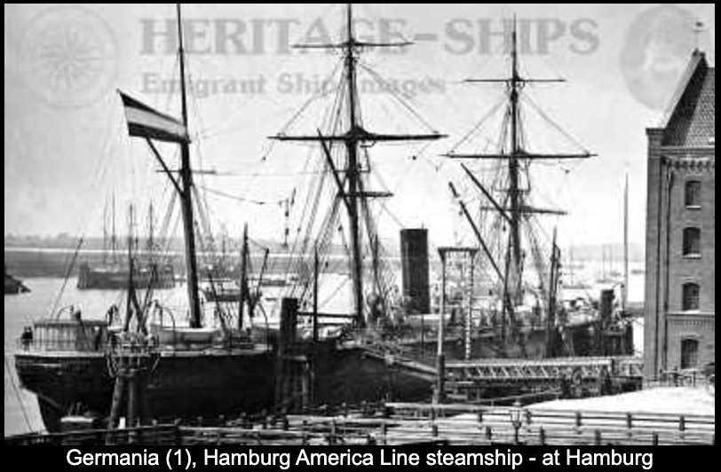
Johann Joachim Friedrich Kölzow (b. 1827), his wife Maria Sophia Joachime Peters (b. 1831), and their two sons, Friedrich (b. 1855) and Johann Ernst Martin (b. 1858), departed Neu Pannekow and emigrated together. They traveled in steerage on the steamship Beta to Southampton and then on Germania (Hamburg-America Line) to New York, arriving mid-May 1864. All four appear on the same household manifest.
In Southampton, passengers disembarked and were marched under supervision to the deep-sea ship. For the Kölzows, this was the Germania, a Hamburg-America Line steamer capable of making the full Atlantic crossing.
Steamships could push through such conditions better than sailing ships, but steerage passengers felt every pitch. Maria Sophia likely spent days tending seasick children. Johann, like many fathers, probably climbed on deck when allowed, clutching the rails in the spray.
Steamships in this period typically made the crossing in 15–18 days. One wonders of the friendship formed over a 3 week journey.
Arrival in New York — Mid-May 1864
The Kölzow family arrived in New York in mid-May 1864, processed through Castle Garden, the immigration hub before Ellis Island existed.
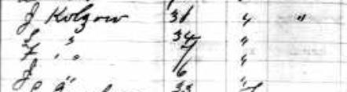
Castle Garden logged the family simply:
- Johann (as "J. Kolzow")
- Maria Sophia ("S")
- F
- J
From there, they would take the fastest available routes inland—rail to the Midwest, likely through Detroit or Chicago—heading toward Wisconsin.
Wisconsin: A New Beginning on New Soil
A Land That Looked Familiar
The Kölzows settled in Muskego, a place of lakes, wetlands, and open fields.
The German Lutheran churches became the center of community life. Sermons, catechism, weddings, and funerals all took place in German well into the 20th century. Names like Scholz, Wustmann, Peters, Koelzow, Kelsey, Schaefer, and Labude filled the registers.
John (Johann) Ernst Martin Kelsey (1858–1939)
(Alma's Grandfather)
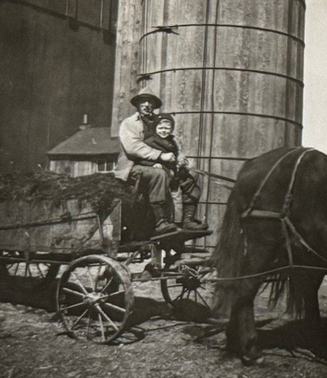
John, who had been nine when he left Mecklenburg, grew up in Wisconsin's fields. He worked the land, learned English in school, and attended St. Paul's Lutheran with his family. In 1886, he married Louise Caroline Scholz, beginning the American branch of the family.
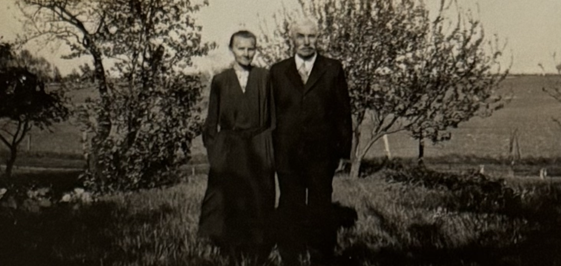
For the first time in centuries, a Kölzow—now Kelsey—owned land.
Their life was one of barn raising, planting and harvesting, community gatherings, church festivals, family baptisms and funerals, slow but steady prosperity.
John lived until 1939, the last living member of the immigrant generation.
Ida Wilhelmina Kelsey (1896–1987)
(Alma's Mother)
Born in 1896, Ida was the first generation raised entirely as an American.
Marriage and Motherhood
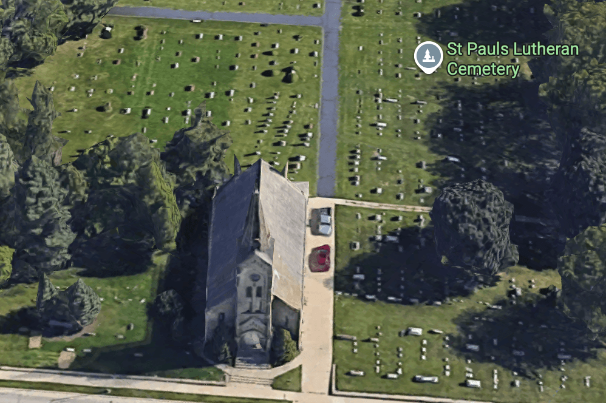
In 1916, Ida married Emil Paul Wustmann, another descendant of German immigrants. Their wedding was held in St. Paul's Lutheran Church in Tess Corners—the same church that anchored generations before her.
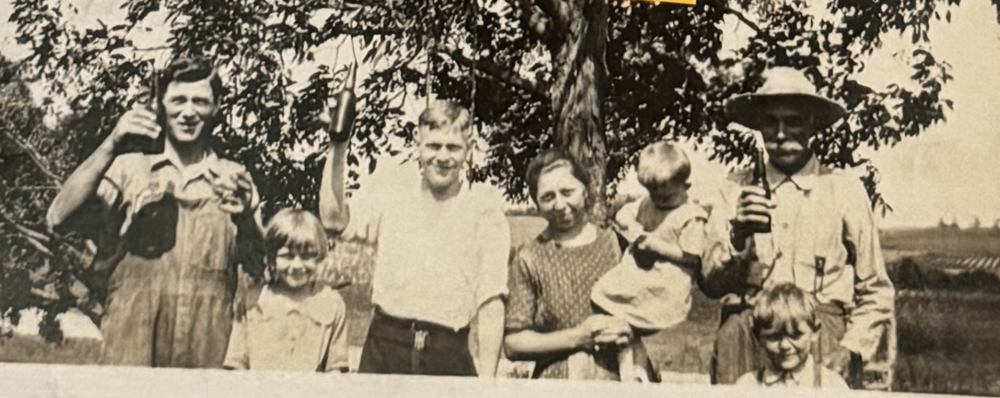
They raised 3 children, with 2 passing early:
- Alma (1917)
- Alfred (1919)
- Elsa (1924), died at 11 days
- Norbert (1926), died at age 1
- Robert (1930)
Their home moved between Muskego, Hales Corners, and Greenfield—communities defined by family farms, sawmills, dairies, and a growing suburban landscape.
Ida lived through two world wars, the Great Depression, the rise of automobiles, and the shift from German-speaking churches to English ones, outliving nearly all her siblings and dying in 1987 at age 90.
Paul Emil Wustmann (1891–1971)
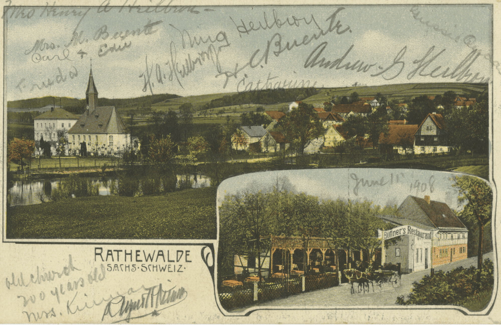
The Wustmann story begins in the sandstone hills of Saxon Switzerland with Karl Gottfried August Wustmann, whose life centered around the small village of Rathewalde in the district of Sächsische Schweiz-Osterzgebirge. Although his birth date is not recorded, his death took place in Rathewalde, and the church registers show that he and his wife raised a family firmly rooted in the region. Their children included Friedrich Emil Wustmann, born on 12 November 1862, along with several siblings recorded in the Gedcom: Johanne Karoline Auguste, Karl Gustav, Paul Richard, and Louise Minna, all born in the 1850s–1860s. These children grew up in the shadow of Hohnstein and Pirna, in an era when Saxon farm villages still operated under the rhythms of the Evangelical-Lutheran church calendar and the political changes of the Kingdom of Saxony.
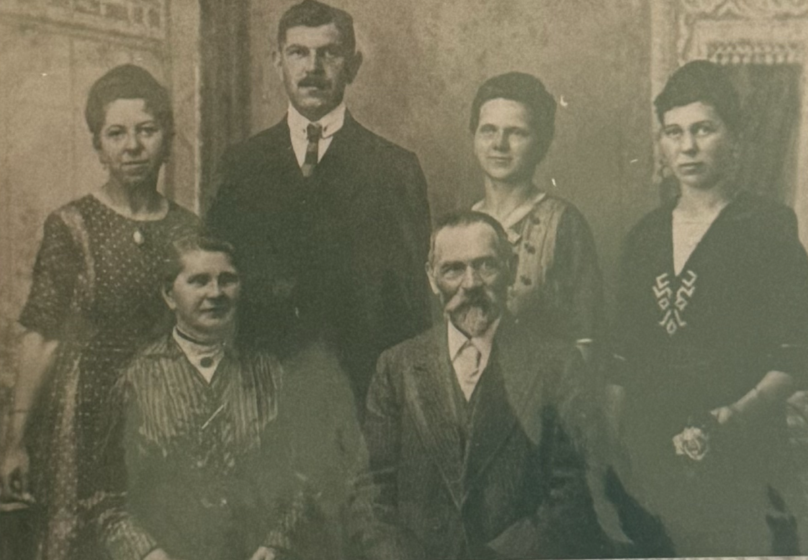
As the 19th century progressed, economic pressure and shifting opportunities pushed many Saxon families toward urban centers or overseas migration. Friedrich Emil's life reflects this transition. Although born in Rathewalde, he appears later in Dresden civil records and is also tied to American records by 1870, suggesting that his family left Saxony during his childhood and spent time in the Midwest of the United States. His presence as a child in York Township, DuPage County, Illinois aligns with a large wave of German migration during the tumultuous years after the Austro-Prussian War. Despite this move, some ties to Saxony remained, and it was in Dresden—the capital of the Kingdom of Saxony—that Friedrich's son, Emil Paul Wustmann, was born on 3 March 1891.
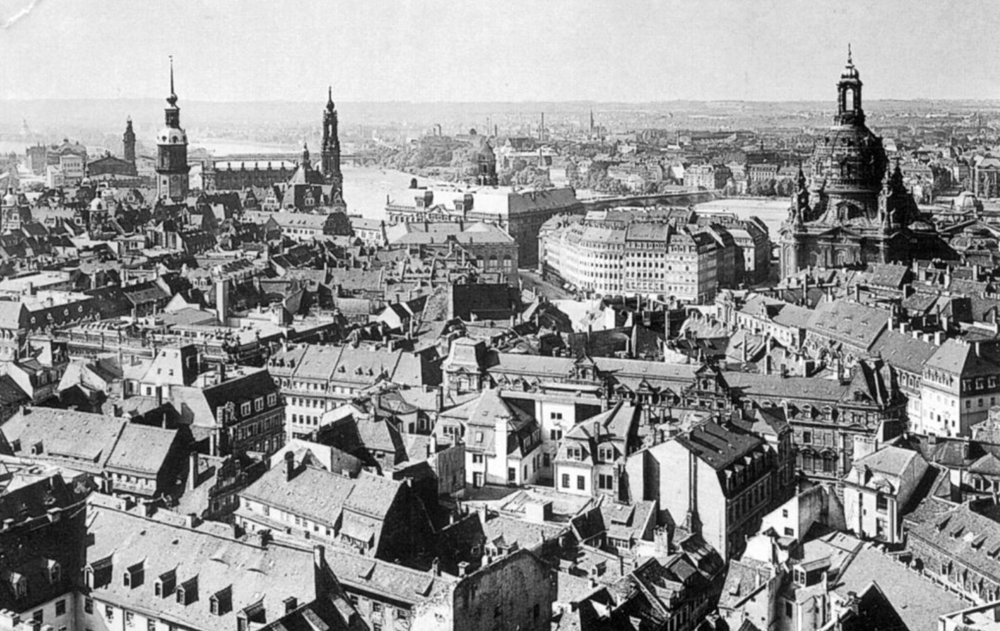
Emil Paul's early years were shaped by Dresden, but his adult life unfolded across the American Midwest. Records show him in Illinois, Indiana, Wisconsin, and Iowa, moving with the patterns of employment, marriage, and family common among first- and second-generation German-American families.
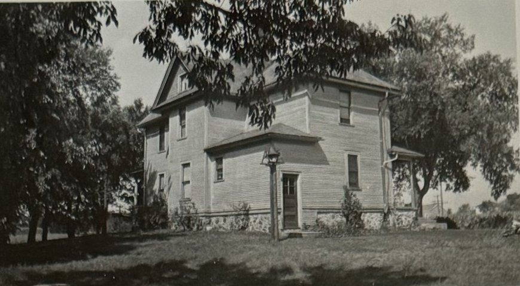
Eagle, Wisconsin">Yet not all branches of the Wustmann family remained in America. One line stayed in Germany into the 20th century, and after the devastation of the Second World War, we find Frieda Wustmann and Josef Wustmann living in Mannheim in 1948. Their presence there reflects the enormous population shifts that occurred in Germany at the end of the war, with families displaced from Saxony and other regions relocating to the American and French occupation zones. Mannheim, heavily bombed during the war but undergoing rapid reconstruction, became a destination for many families seeking stability. The appearance of Frieda and Josef there indicates that at least one branch of the Wustmann line remained in Germany through the upheaval of the 20th century while others had been in the United States for several generations.
Taken together, the Wustmann family timeline stretches from a quiet Saxon village in the mid-1800s, through migration and rebuilding in America, and back into postwar Germany. It reflects both the deeply rooted stability of small German communities and the dramatic movement of families shaped by war, opportunity, and the search for a better life.
During World War I, Saxony suffered severe hardship through conscription, hunger, and economic collapse, though Dresden itself escaped physical destruction. In World War II, Saxony became a key industrial region, and Dresden was nearly annihilated in the 1945 firebombings, causing massive civilian displacement. After the war, Soviet occupation pushed many families westward, explaining why Wustmann relatives such as Frieda and Josef were living in Mannheim by 1948.
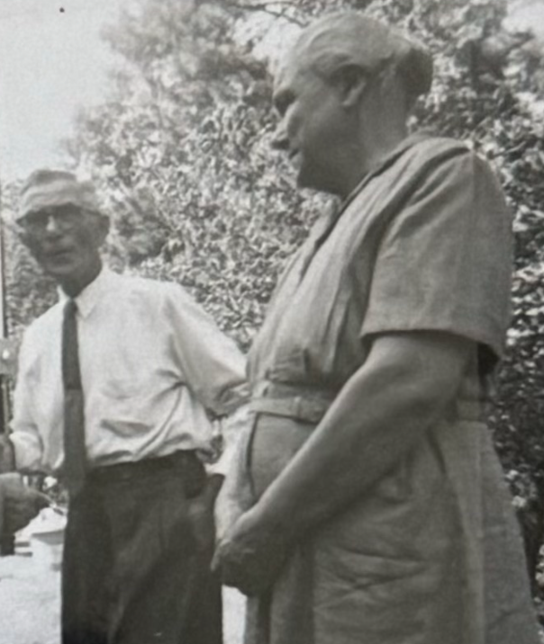
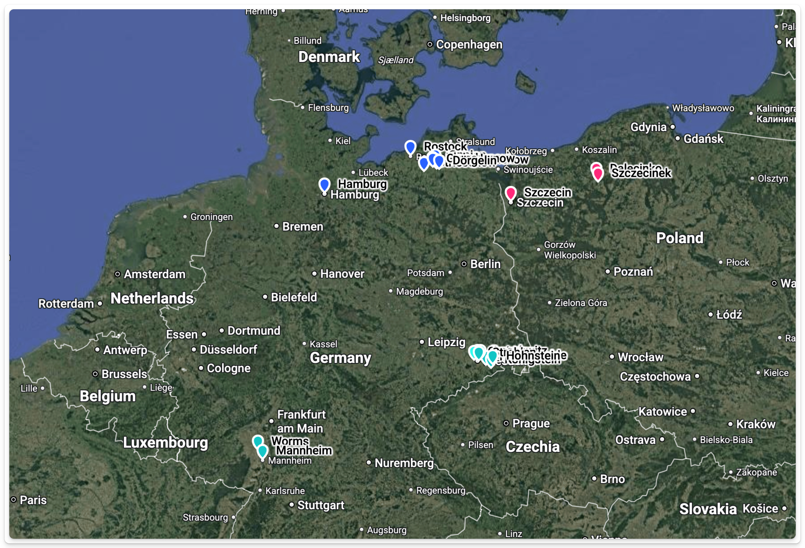
Sources
- Ancestry.com Tree
- Official Prussian emigration register preserved at the Staatsarchiv Greifswald, Pomerania (present-day Germany/Poland). The cover page reads: "Verzeichnis der Personen welche mit dem Dampfschiffe Martha nach New York über Ostsee auswandern. Abgang des Schiffes vom 24ten März 85." Translation: "List of persons emigrating to New York by the steamship Martha via the Baltic Sea. Departure of the ship on 24 March 1885."
- Castle Garden Records
- Julius Kleier Birth Record — pommerscher-greif.de
- Neustettin (Neu-Stettin, now Szczecinek, Poland)
- Kleier Story Bulletin No. 1
- Kleier Story Bulletin No. 2
- Ward 1 West Allis — Map